From the Field
Evidence of the Work
Not stock images. Every photograph was taken at a real mine site — a real moment from the journey of learning this industry from the inside.
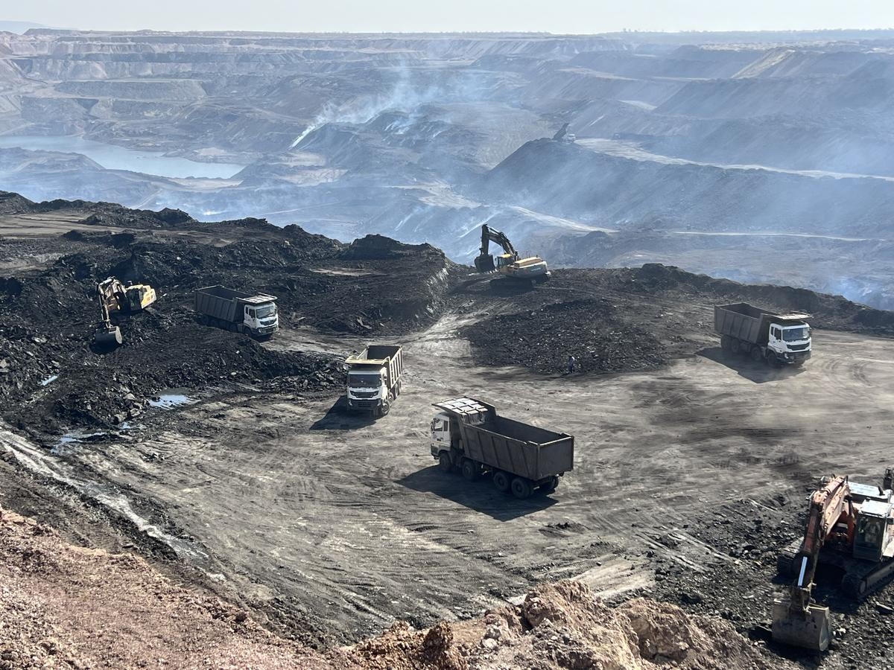
Mine Site Operations
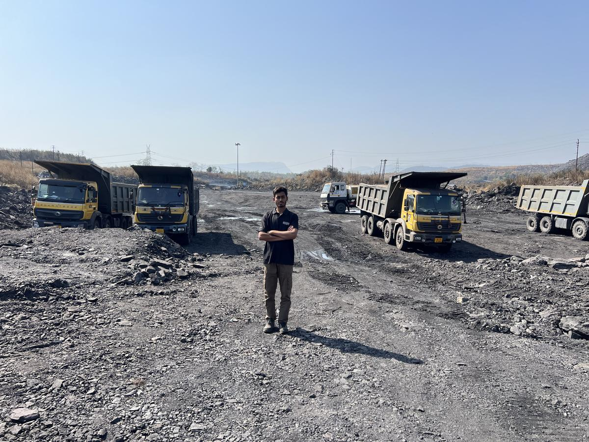
Mining Equipment · Site Survey
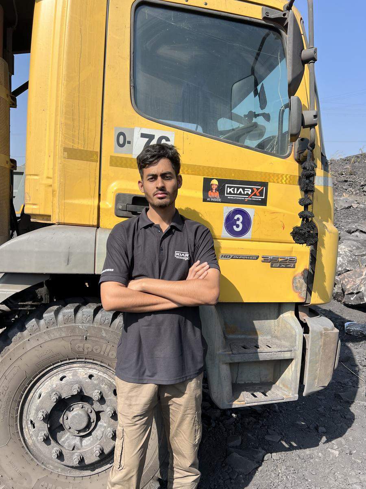
Underground Mine · Kurja UG Mine, SECL
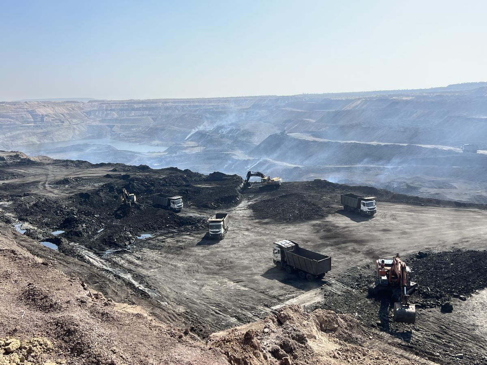
Site Deployment · BKT Minetech
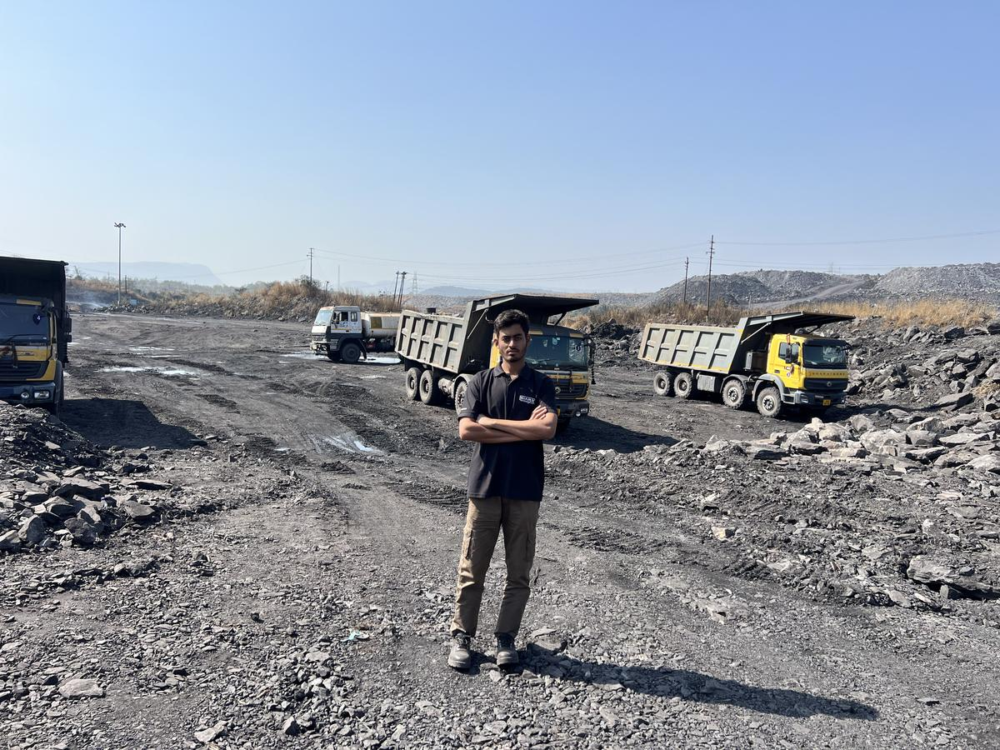
Engineering Fieldwork · CCL
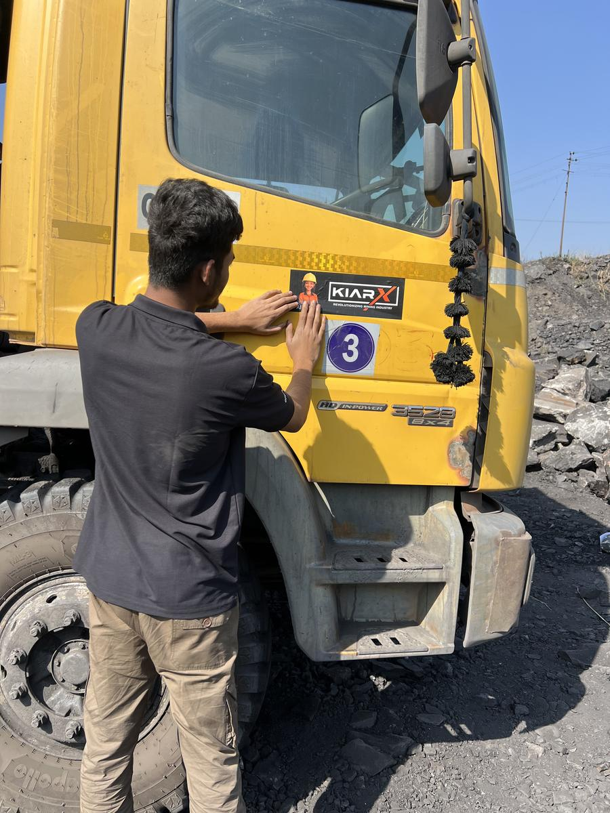
Mine Operations · Active Site
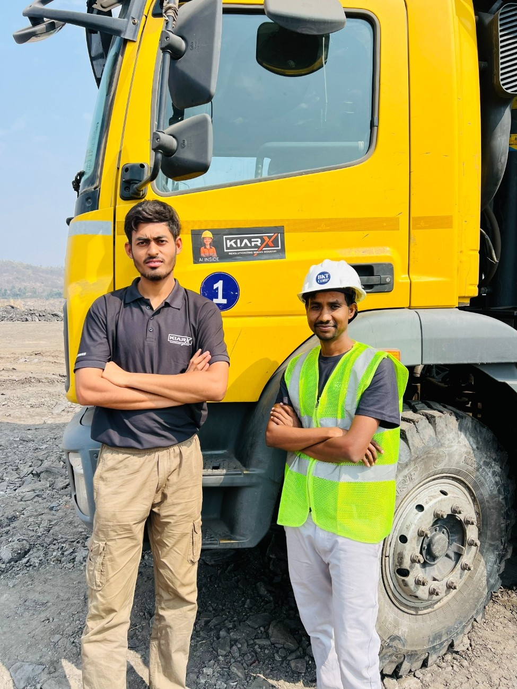
Underground Workings · SECL
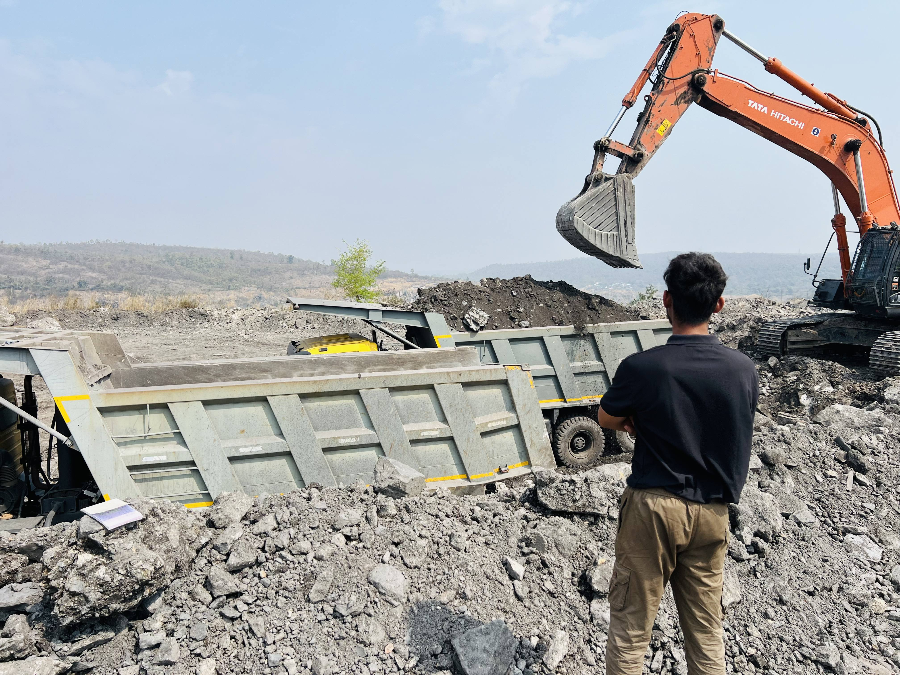
Field Operations · KiarX
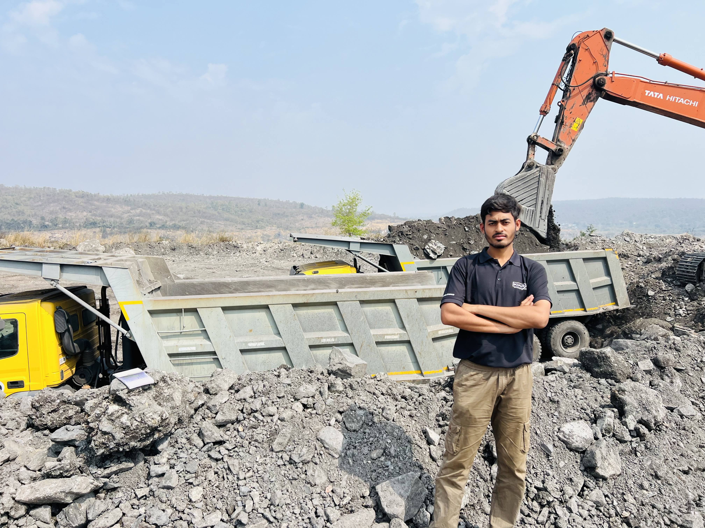
CCL Mine Visit

Site Monitoring · Fleet Tracking
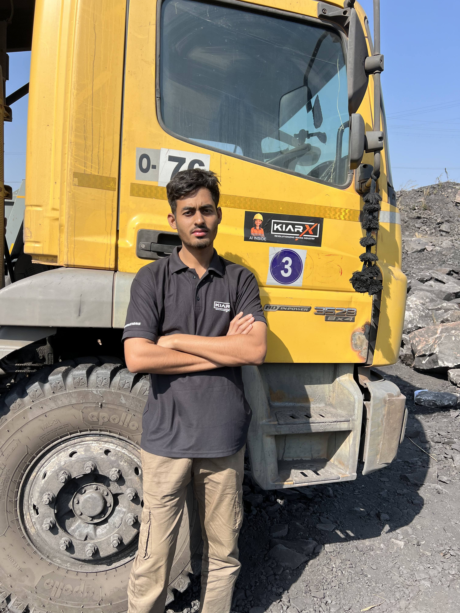
Mine Site · Operational Review
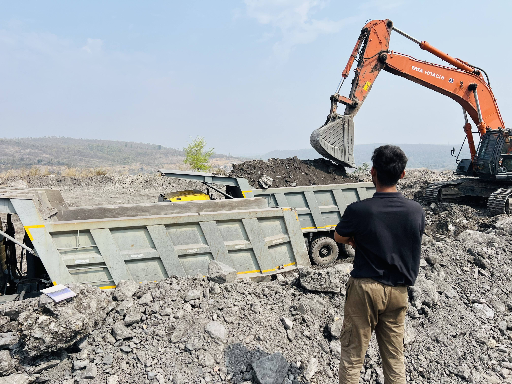
Field Verification · Equipment